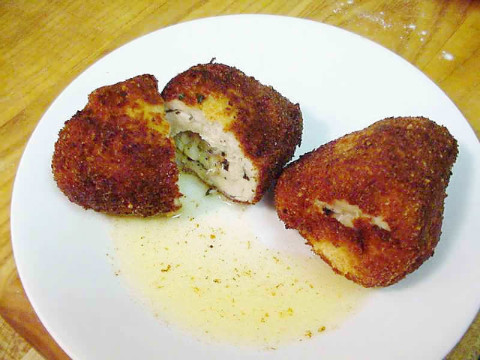
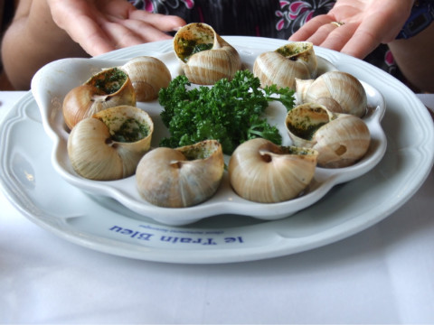
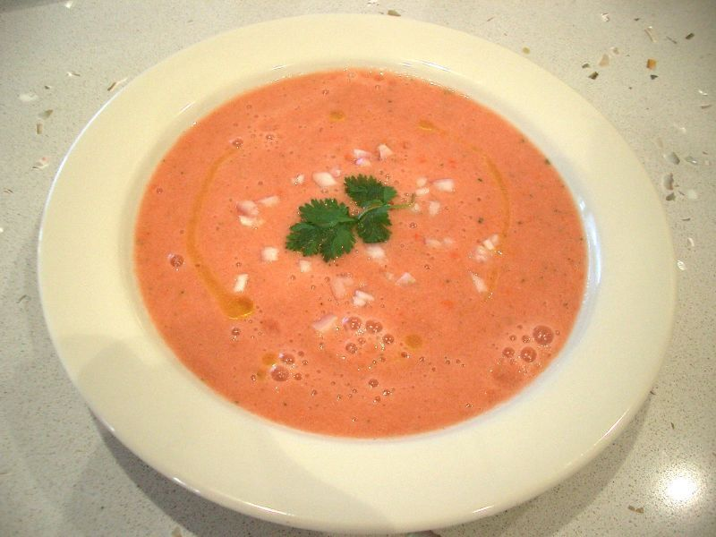

마늘을 사랑한 영국인 리처드 샤프
게시: 2018-09-13T06:30:00+09:00
오래 전에 차두리 선수가 아직 현역일 때 프랑크푸르트에서 현지 언론과 인터뷰를 한 것이 신문에 났었습니다. 그때 아주 인상적인 한마디가 있었습니다.
"부모님이 말씀하시길 여기서 적응하려면 독일사람이 되어야 한다고 하신다. 한국 음식은 잘 먹지 않는다. 마늘이 많이 들어간 음식을 먹으면 다음날 친구들에게 미안하다."
뭐가 미안하지요 ? 마늘 냄새가 나는 것이 미안한거지요. 제가 다른 곳에서 듣기로도, 유학생이 주말에 한국 음식 해먹고 가면 서양애들은 귀신처럼 냄새로 알아차린다고 합니다. 그리고 서양애들은 대개 마늘 냄새를 무척이나 싫어하지요.
(이것이 바로 드래곤 브레스보다 더 무섭다는 갈릭 브레스)
이렇게 마늘 냄새가 그 다음날까지 나는 것은 이유가 있답니다. Allyl methyl sulfide(AMS, 황화 알릴 메틸)이라는 물질이 마늘 냄새의 주성분인데, 이 성분은 사람 몸에서 분해가 되지 않고 그대로 혈액까지 흡수가 된답니다. 그 혈액이 돌고 돌아 폐를 통해 숨결로 나오고, 또 땀에도 섞여 나오기 때문에, 마늘 냄새에 예민한 서양것들은 우리가 마늘이 들어간 음식을 먹으면 1~2일 뒤까지도 우리 몸에서 마늘 냄새를 맡을 수 있다고 합니다.
실은 이런 '카더라' 통신도 들은 바 있어요. 즉, 잘게 다진 마늘즙을 갓난아이의 발바닥에 발라놓고 몇시간 지난 뒤에 아이의 숨결을 맡아보면, 희미하게 마늘냄새가 난다는 거지요. 얇은 아이의 피부를 AMS가 뚫고 들어가 혈액에 섞이기 때문이라고 합니다. 저는 총각 때 그런 이야기를 듣고, 신기하게 생각했었어요. 그래서 나중에 나도 아이를 낳으면 한번 테스트해봐야겠다 라고 생각했는데, 차마 우리 아이에게는 그딴 짓 못하겠더라고요. (그럼 남의 아이에게는...??)
그런데 마늘 냄새가 촌스러운가요 ? 솔직히 약간 촌스럽긴 합니다. 기분 좋은 향수는 아니쟎아요. 하지만 음식에 들어가면 정말 좋은 맛을 내주는 것도 맞지요. 저도 마늘 좋아합니다. 모든 찌개, 볶음, 나물 등에는 마늘을 꼭 넣고, 특히 스파게티를 만들 때는 듬뿍듬뿍 집어 넣습니다. 심지어 크림소스 스파게티를 만들 때도요.
하지만 서양인들은 정말 마늘 냄새를 싫어하는 것 같습니다. 특히 동양을 싸잡아 멸시할 때 마늘 냄새 이야기를 많이 합니다. 가령 어떤 인터넷 사이트를 보니 (http://www.bible-history.com/isbe/G/GARLIC ), '마늘은 동양(Orient) 전지역에서 많이 재배한다... 그 불쾌하고 (disagreeable) 구석까지 스며드는 (penetrating) 악취는 동양인들의 집이나 그 입냄새에서 뚜렷하게 느껴진다' 라고 표현을 해놓았습니다. 이 정도면 거의 동양에 대한 혐오 수준이라고 할 수 있습니다. 특히 그 사이트가 성경 공부하는 사이트인데도 그런 멸시적 표현을 쓴다는 것은 좀 씁쓸한 일입니다.
그런데 사실 예수님도 마늘을 많이 드셨던 모양입니다. 예수님이 마늘을 드셨다는 이야기는 성경에 직접 나오지는 않습니다만, 다음과 같이 민수기 11장 5절에 이집트에서 먹던 마늘을 그리워 하는 이야기가 나옵니다.
"우리가 애굽에 있을 때에는 값 없이 생선과 외와 수박과 부추와 파와 마늘들을 먹은 것이 생각나거늘"
그 다음 구절은 불경스럽게도 하나님이 직접 주신 음식인 '만나' 밖에 없다고 투덜거리는 내용입니다.
"이제는 우리의 기력이 다하여 이 만나 외에는 보이는 것이 아무 것도 없도다 하니"
즉, 유대인들은 하나님이 주신 음식인 만나보다는 이집트에서 먹던 마늘 들어간 음식들이 더 맛있었나 봅니다.
(하나님이 만나를 내려주시는 동안, 유대인들은 'ㅆㅂ 마늘은'이라며 불평하고 있었습니다. 이 기간 중 하나님은 유대인들이 하도 말을 안들어서 속을 많이 썩히셨다고...)
이 뿐만 아니라, 예수님 시절에 로마인들이 유대인들을 가리켜 '마늘 냄새 나는 유대인들' 이라며 멸시했다고 합니다. 즉 당시의 유대인이었던 예수님도 마늘을 즐겨 드셔서 입냄새에서 마늘 냄새가 나셨을 것이라는 거지요.
진짜 우스운 것은 그렇게 유대인들에게서 마늘 냄새가 난다고 경멸하던 로마인들의 후손인 이탈리아인들이 지금은 유럽에서 가장 마늘을 많이 먹는 사람들이 되었다는 것입니다. (사실은 유럽에서는 스페인이 제일 많이 마늘을 소비한다고 하더군요.)
마늘의 위대함은 마늘의 세계 정복에서 그대로 드러납니다. 마늘은 원래 중서부 아시아 쪽이 원산지라고 알려져 있는데, 이집트에서 피라미드를 쌓는 인부들에게 주어지는 식단에 마늘이 포함되어 있을 정도로 이미 중동 지방에 퍼져 있었고, 곧 로마제국에 상륙, 지중해 지역을 완전 장악합니다. 이어서 유럽인들의 대항해 시대에 (주로 스페인과 포르투갈이 주도했지요) 아프리카와 중남미 아메리카로 퍼져 나가, 그 지역에서도 매우 인기있는 양념이 되었습니다. 동아시아에는 BC 130~120 경에, 장건이 서역 탐험의 결과로 중국에 도입했다고 알려져 있습니다. 즉, 마늘은 상륙하는 즉시 현지에서 큰 인기를 끌었다는 것이지요.
잠깐, 그런데 우리나라는 반만년 전의 건국 설화에서조차 등장할 정도로 마늘의 본고장 아니었던가요 ? 그런데 중국에 마늘이 도입된 것이 고작 기원전 2세기라면... 우리나라에는 언제 마늘이 도입되었을까요 ? 그리고 단군신화에 나온 마늘은 뭘까요 ?
(이거 그럼 중국산 마늘이야 ?)
사실 단군 신화에 나온 것은 (어차피 삼국유사는 한문으로 씌여져 있으니까) 마늘이 아니라 달래라고 합니다. 즉 산이라는 한자는 원래 달래를 가리키는 글자였는데, 나중에 마늘이 도입된 이후로는 마늘을 대산, 달래를 소산으로 구분해서 불렀다고 하는군요. 그러나 우리는 그를 여전히 쑥과 마늘이라고 알고 있지요. 이는 마늘이 우리나라를 그만큼 철저히 점령하고 있기 때문에 나온 결과라고 생각됩니다. 어느 외국 Q&A site를 보다보니, 어느 나라가 마늘을 제일 많이 먹느냐는 질문에, 답변이 '한국과 스페인'이라고 달린 것을 읽었습니다. 그런데, 그 답변자가 토를 달기를, 아마도 스페인은 유럽 지역만 봤을 때 그렇다는 것 같고, 세계 최고는 단연 한국이라고 되어 있더군요.
그런데 마늘이 유일하게 그다지 환영받지 못하는 곳이 있습니다. 바로 북유럽 쪽이지요. 여기서 북유럽이라 함은 스칸디나비아 반도 뿐만 아니라, 덴마크, 영국, 독일 등 게르만 족속들이 사는 곳을 뜻합니다. 영국과 독일의 후예들이 주류를 이루는 미국도 어느 정도 그렇습니다. 얘들은 후각이 무척이나 예민한 것 같아요. 그래서 마늘 냄새를 견디지 못하는 모양입니다.
(이 영화는 작가인 마이클 크라이튼도 만족한다고 했습니다만... 망했습니다. 제작비도 못건졌다고 합니다..)
예전에 읽은 소설 중에, '시체를 먹는 자들'이라는, 일종의 역사(...라기보다는 판타지) 소설이 있습니다. 작가는 무려 쥐라기 공원을 썼던 마이클 크라이튼이고, 90년대 후반에 안토니오 반데라스 주연의 '13번째 전사'라는 제목으로 영화화도 되었습니다. 소설 원제는 'Eaters of the Dead: The Manuscript of Ibn Fadlan Relating His Experiences with the Northmen in A.D. 922'으로서, 부제를 번역하면 '서기 922년 이븐 파들란이 노르만인들과 경험했던 사건의 기록' 정도가 되겠습니다. 소설 줄거리는 아랍인 학자가 어찌어찌하여 러시아 쪽에서 바이킹들과 합류하게 되어 지내다가, 당시 바이킹 마을을 주기적으로 습격하던 네안데르탈인들과 혈투를 벌이는 내용입니다.
(영화는 그저 그랬으나, 소설은 상당히 재미있었습니다. 주석이 하도 사실처럼 달려 있어서 처음에는 진짜 역사책인줄 알고 읽었는데, 알고보니 주석조차도 소설의 일부더군요.)
여기서 인상적이었던 것은, (진짜 바이킹 풍속 중에 그런 것이 있는지 모르겠는데) 바이킹 전사가 전투 중에 배에 상처를 입을 때의 처리 방식입니다. 그렇게 다친 전사에게는 먼저 양파 수프를 먹인다는 거에요. 그렇게 양파 수프를 먹인 뒤, 상처에 코를 대고 냄새를 맡아 보아서, 양파 냄새가 나면 그 전사는 가망이 없는 것으로 포기하고, 냄새가 안나면 살 수 있는 것으로 판단한다는 것입니다. 내장 기관이 상했는지 여부를 보는 것이지요. 제가 의아하게 생각했던 것은, 어차피 양파를 끓여서 국을 만들면 양파 냄새가 거의 사라질텐데, 그것도 피비린내나는 좁은 상처 틈 사이로 과연 양파 냄새가 날까 하는 것이었습니다. 그런데, 북유럽인들은 그 냄새를 맡을 수 있나 보지요 ? 사실이라고 하면 정말 개코가 따로 없네요.
아무튼 북유럽인들은 마늘 넣은 음식을 정말 싫어들 합니다. 아예 안먹는 것은 아니고요, 갈릭 브레드나 치킨 키에프 (마늘 버터를 넣은 닭요리) 정도를 먹는다고 하네요.

(갈릭 버터를 주 양념으로 쓰는 닭요리, 치킨 키에프)
Sharpe’s Honour by BERNARD CORNWELL (배경: 1812년 포르투갈) -------------------
(신임으로 포르투갈 전선에 파견된 영국군 매튜즈 소위가 술에 취해 반쯤 맛이 간 프라이스 중위를 만납니다.)
그 중위는 어정쩡하게 미소를 짓더니 돌아서서는 토하기 시작했다.
'오, 젠장 !' 그 중위는 숨쉬는 것이 힘들어 보였으나 다시 힘들여 똑바로 서서, 소위를 향해 돌아섰다.
'친구, 정말 미안하네. 이 빌어먹을 포르투갈 사람들은 모든 것에 마늘을 넣는구만. 난 해롤드 프라이스라네.'
프라이스 중위는 군모를 벗고는 머리를 문질렀다. '미안하네만 자네 이름을 내가 놓친 것 같은데...?'
'매튜즈입니다.'
'매튜즈라, 매튜즈.' 프라이스는 마치 그 이름이 뭔가 중요한 걸 뜻하는 것처럼 되뇌이더니, 다시 위장이 들먹이는지 숨을 참았다가, 경련이 멎은 뒤에 숨을 천천히 내쉬었다.
'용서하게, 매튜즈. 아마 오늘 아침에는 내 위장이 좀 민감한가봐. 어, 내 짐작에, 혹시 내게 5파운드를 꿔주면 자네에게 폐가 될까 ? 그냥 하루 이틀이면 돼. 기니 금화로 주면 더 좋겠고..'
----------------------------------------------------------------------------------------------------
또 그래서 북유럽 쪽이 프랑스나 이탈리아 같은 남유럽 쪽 사람들을 얕잡아 마늘 냄새나는 것들이라고 비난하기도 합니다. 특히 영국인들은 원래 프랑스와 사이가 좋지 않아, 프랑스인들을 이런저런 경멸적 표현으로 많이 부르는데, 대표적인 것이 frogs (프랑스라는 단어와 발음이 어울리기도 하고, 또 프랑스인들이 개구리도 먹는다고 이렇게 부르나 봅니다), snail-eaters (달팽이도 먹는다고 이렇게 부르지요) 정도입니다. 그런데 마늘 냄새나는 것들 (garlic-reekers)이라고 부르기도 합니다.

(솔직히 저도 저건 못 먹을 것 같습니다... 저도 보기보단 비위가 약해요.)
Sharpe's Revenge by BERNARD CORNWELL (배경: 1814년 프랑스 남부) -------------------
네언 장군의 유일하게 원통해하는 것은, 그가 여단 지휘를 맡은 이후 아직 그럴싸한 전투가 벌어지지 않아, 그에게 더 일찍 여단을 주었더라면 좋았을 뻔 했군 하고 멍청한 웰링턴 공작이 후회하게 만들어 줄 기회가 없었다는 점이었다.
"젠장, 리처드, 이젠 남은 전쟁이 별로 없지 않나. 난 저 마늘 냄새 나는 것들에게 한방 먹이고 싶다고."
---------------------------------------------------------------------------------------------------------
프랑스가 자랑하는 요리 중 하나가 에스카르고(Escargot), 즉 달팽이인데, 깔끔한 척하는 영국인들이 질겁을 하는 요리지요. 특히 이 요리는 마늘 버터(garlic butter)로 간을 맞추게 되어 있습니다. 달팽이에 마늘이라... 달팽이의 비린내를 없애는 데는 효과가 좋을 것 같은데, 영국인들은 더욱 질겁하겠군요.
일본인들도 한국인들을 경멸할 때, 마늘 냄새가 난다고 욕합니다. 실은 일본도 마늘을 많이 먹는 편입니다. (그러나 우리나라가 압도적으로 더 많이 먹는 것도 사실입니다.) 다만 일본인들은 양념보다는 음식의 원재료 맛을 그대로 음미하는 것을 더 즐기기 때문에, 마늘이 요리에 많이 쓰이는 편이 아니지요. 대표적인 예가 생선회인데, 그건 정말 날재료를 거의 그대로 먹는 것이다보니, 이건 요리라고 하기도 좀 애매하지요. 하지만 우리나라 사람들은 그런 생선회조자도 된장과 함께 마늘을 넣고 쌈을 싸서 먹으니, 정말 우리나라의 마늘 사랑은 대단하다고 할 수 있습니다.
하지만 영국이든 스칸디나비아 쪽이든, 마늘을 쓰지 않는 나라의 요리는 정말 개판으로 소문이 자자합니다. 반면에, 이탈리아나 프랑스처럼 요리로 소문난 국가는 다들 마늘을 많이 소비하지요. 아무리 봐도 일식보다는 한식이 더 맛있는 것도 마늘 덕분 아닐까 합니다.
그런데 더 웃기는 것은 영국인들로부터 마늘 냄새 난다고 비웃음을 산다는 프랑스 사람들조차도 이탈리아나 스페인 사람들에게 '마늘 냄새 난다'라고 욕을 하는 것 같습니다. 정말 재미있게 본 인도 영화 '굿모닝 맨하탄' (원제는 English Vinglish)에서 이런 장면이 나오더라고요. 잠깐 뉴욕을 방문한 인도 중산층 주부인 여주인공이 현지에서 만난 프랑스인 요리사와 이야기를 하며 난 이탈리아 음식과 프랑스 음식을 구별 못하겠다고 하니까, 프랑스인 요리사가 '프랑스 요리에서는 이탈리아 요리처럼 마늘을 많이 쓰지 않는다'라고 비웃듯 이야기하는 장면이 있었거든요.
(이 영화 정말 재미있습니다. 이 영화의 여주인공인 저 인도 여배우 최근에 사망했다는 뉴스가 나와 저를 슬프게 했습니다. Rest in peace...)
Sharpe’s Honour by BERNARD CORNWELL (배경: 1813년 스페인) -------------------
(프랑스군의 포로가 된 영국군 샤프 소령을 프랑스군 장교들이 접대하고 있습니다.)
샤프는 몽브렁 소령이 이번 봄엔 비가 많이 왔었고, 스페인치고는 이번 여름엔 비가 잦은 편이라고 말하는 것에 맞장구를 쳐주었다. 또 이 가스파초(gazpacho, 스페인의 토마토 수프)가 맛있다고 해주었다. 몽브렁은 샤프의 입맛에 맞기에는 마늘이 너무 많이 들어가지 않았나 염려된다고 했으나, 샤프는 자신의 입맛에 마늘이 너무 많이 들어갔다라는 건 있을 수 없는 일이라고 말했고, 몽브렁은 그런 미각이 정말 현명한 것이라고 맞장구를 쳤다.
---------------------------------------------------------------------------------------------------

(스페인식 차가운 토마토 수프인 가스파초입니다.)
이 소설에 나오는 주인공 샤프 소령은, 그냥 공치사로 마늘을 좋아한다고 말한 것이 아니라, 실제로 마늘을 좋아합니다. 샤프 소령은 나폴레옹 전쟁 내내 죽은 프랑스 병사들의 시체에서 프랑스산 마늘 소시지를 노략질해 먹다가, 마늘에 맛을 들인 것으로 나오지요. 비록 영국인이라는 태생적 한계가 있지만, 그를 극복하고 마늘을 사랑하게된 리처드 샤프 소령에게 따뜻한 환영의 박수를...